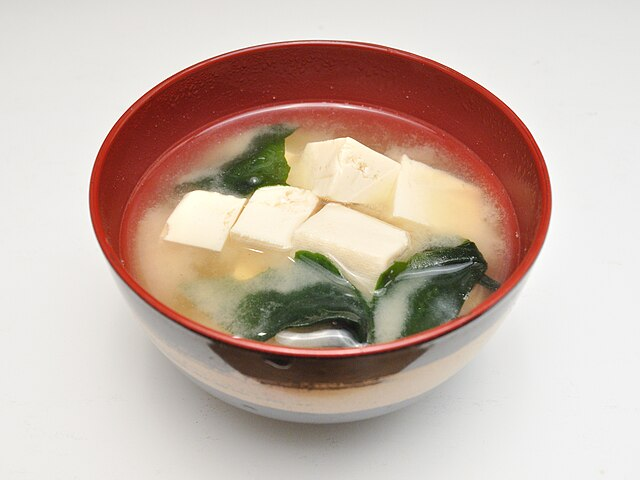

Home
Miso Soup
Serves 6

Miso soup is a quick and easy Japanese soup. It uses a small number of ingredients and is good as a snack or a side. You can also add other ingredients to miso soup to make it more filling and increase its nutrition.
Ingredients
Seaweed
- 2 cups boiling water
- 2 tbsp wakame
Broth
- 4 cups water
- 2 tsp instant dashi
- ½ lb silken tofu (drained and diced)
- 3 tbsp miso (white or red)
- ¼ cup scallions thinly sliced
Directions
- Rehydrate wakame by adding both the wakame and the boiling water to a heat proof container.
- Soak until fully rehydrated. Strain and set aside.
- Add 4 cups of water to a pot. Add 2 cups of instant dashi and boil on high heat.
- Reduce the heat to medium-high and add the tofu and rehydrated wakame. Gently stir to distribute the and then let come back to a boil and turn off the heat.
- With the heat off, add 3 tbsp of miso to a strainer or large spoon and lower it into the pot. Use a spoon to slowly mix the miso into the broth without breaking up the cubes of miso.
- Spoon the miso soup into bowls and add scallions.